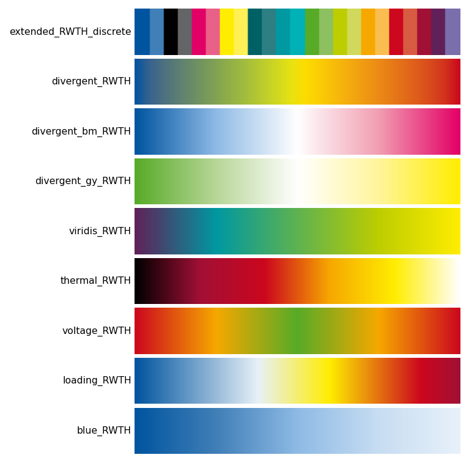

Colormaps¶
38 colormaps are registered with Matplotlib automatically on import rwthplots.
Every map is also available in a reversed variant by appending _r
(e.g. loading_RWTH_r), following the standard Matplotlib convention.
All are accessible via plt.set_cmap(), plt.get_cmap(), or the
rwth_cmap() factory.

Choosing the right colormap¶
| Data type | Recommended map |
|---|---|
| Qualitative / categorical | extended_RWTH_discrete with lut=N |
| Ordered / ranked categories | continuous_RWTH_discrete |
| Symmetric diverging (e.g. anomalies) | divergent_RWTH, divergent_bm_RWTH, divergent_gy_RWTH |
| Strictly positive sequential | viridis_RWTH, thermal_RWTH |
| Single-hue gradient | any <colour>_RWTH (e.g. blue_RWTH) |
| Voltage deviation | voltage_RWTH |
| Line / transformer loading | loading_RWTH |
Perceptual uniformity
viridis_RWTH is designed for perceptual uniformity — lightness increases
monotonically from violet to yellow, making it suitable for print, screen,
and greyscale reproduction. For non-uniform maps (e.g. thermal_RWTH) the
lightness path is non-monotonic, which can mislead magnitude judgements.
Using colormaps¶
import matplotlib.pyplot as plt
from rwthplots.cmap import rwth_cmap
# Standard Matplotlib interface (registered on import)
plt.set_cmap("divergent_RWTH")
ax.imshow(data, cmap="loading_RWTH")
# Factory — returns a LinearSegmentedColormap object
cmap = rwth_cmap("extended_RWTH_discrete", lut=6)
# List all registered names
print(rwth_cmap())
Discrete maps¶
These maps assign one distinct colour per data category with no interpolation between steps.
extended_RWTH_discrete¶
The full RWTH corporate design palette arranged for maximum pairwise contrast.
Use lut=N to request exactly N colours (1–65):
Colour order is chosen so that each successive colour is as perceptually
distinct as possible from the preceding ones — the same greedy strategy used
by pick_colors().
continuous_RWTH_discrete¶
Samples the full 65-colour palette in order, starting from blue and sweeping continuously through hue. Useful when you want to encode a large number of ordered categories.
Diverging maps¶
Diverging maps have a neutral midpoint (usually white or a light colour) and two saturated extremes. Use them when data has a meaningful centre value — temperature anomalies, deviations from a target, positive/negative quantities.
Always pair diverging maps with a centred normalisation:
import matplotlib.colors as mcolors
# Symmetric around 0
norm = mcolors.TwoSlopeNorm(vcenter=0.0, vmin=-2.0, vmax=2.0)
ax.contourf(lon, lat, anomaly, cmap="divergent_RWTH", norm=norm)
| Name | Extremes | Mid |
|---|---|---|
divergent_RWTH |
Blue ↔ Red | Green |
divergent_bm_RWTH |
Blue ↔ Magenta | White |
divergent_gy_RWTH |
Green ↔ Yellow | White |
voltage_RWTH |
Red ↔ Red | Green |
Sequential maps¶
Sequential maps encode magnitude on a single perceptual axis from low to high. They work best for data with a natural zero or minimum.
| Name | Stops | Notes |
|---|---|---|
viridis_RWTH |
Violet → Turquoise → May green → Yellow | Perceptually uniform |
thermal_RWTH |
Black → Bordeaux → Red → Orange → Yellow → White | Blackbody / incandescence style |
loading_RWTH |
Blue → White → Yellow → Red → Bordeaux | 0 % to overloaded |
blue_RWTH |
Blue 100 % → Blue 10 % | Single-hue tint gradient |
| (+ 12 single-colour gradients) | One per remaining RWTH base colour |
Power-system colormaps¶
Two colormaps are designed specifically for power-system analysis and grid visualisation. They follow the RWTH colour semantics that engineers at IAEW are familiar with from simulation tools.
import matplotlib.colors as mcolors
norm = mcolors.TwoSlopeNorm(vcenter=1.0, vmin=0.88, vmax=1.12)
im = ax.imshow(voltages, cmap=rwth_cmap("voltage_RWTH"), norm=norm)
cbar = fig.colorbar(im, ax=ax)
cbar.set_label("Voltage (pu)")
voltage_RWTH — symmetric red → orange → green → orange → red.
Green at the nominal voltage (1.0 pu), red at both over- and under-voltage
extremes. Always use with TwoSlopeNorm(vcenter=1.0).
cmap = rwth_cmap("loading_RWTH")
colors = [cmap(min(v, 1.0)) for v in line_loadings]
bars = ax.bar(labels, line_loadings * 100, color=colors)
ax.axhline(100, color="#CC071E", linewidth=1, linestyle="--")
loading_RWTH — blue → white → yellow → red → bordeaux.
Blue for unloaded lines, bordeaux for overloaded. Map values to [0, 1]
where 1.0 = 100 % loading; clip above 1.0 to bordeaux.
Colour sets (qualitative)¶
Named palettes for discrete data with up to 13 categories. Access colours by name for readable code:
from rwthplots.cmap import rwth_cset
# Full-intensity palette
cset = rwth_cset("rwth_100")
ax.plot(x, y1, color=cset.blue)
ax.plot(x, y2, color=cset.orange)
ax.plot(x, y3, color=cset.green)
# Lighter tints for filled areas, shading, or secondary lines
cset_50 = rwth_cset("rwth_50")
ax.fill_between(x, y1, alpha=0.4, color=cset_50.blue)
# Iterate over all 13 colours
for i, color in enumerate(cset):
ax.plot(x, data[i], color=color)
Available tint levels:
| Name | Lightness |
|---|---|
rwth_100 |
100 % (full saturation) |
rwth_75 |
75 % |
rwth_50 |
50 % |
rwth_25 |
25 % |
rwth_10 |
10 % (near-white tints) |